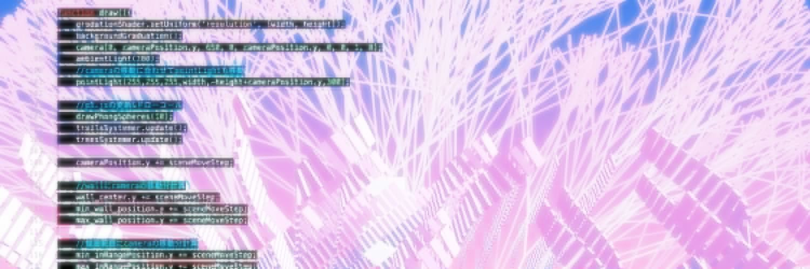

Tree of Souls
- 年Year
- 2023
- かたちForm
- ジェネレーティブアート（JavaScript、p5.js）・Boids（群れの規則）の軌跡Generative art (JavaScript, p5.js), trails of Boids (flocking rules) (draft)
- 発表Shown at
- Processing Community Day Tokyo 2023（2023年6月、渋谷）。Boids アルゴリズムによる軌跡を用いたデジタル彫刻の生成Processing Community Day Tokyo 2023 (June 2023, Shibuya). Digital sculpture generated from trails of the Boids algorithm. (draft)
- リンクLink
- neort
成長し続ける一本の木と、その周りを動く「魂」。魂どうしは互いの存在を参照して動く。A tree that keeps growing, and "souls" moving around it. Each soul moves in reference to the others. (draft)
群れそのものではなく、通った軌跡を描く。Boids の規則で群れを動かし、各個体の軌跡を蓄積して描く。通過回数の多い場所ほど濃くなり、時間とともに薄れる。Drawing the trails a flock leaves, not the flock itself. I run a flock with the Boids rules and accumulate each bird's trail. Places passed more often grow denser, and the trails fade over time. (draft)
形を直接描かず、形が生成される規則をコードで書いている。更新するのは形ではなく、その前段の規則や条件で、線の束は結果として現れる。I do not draw the form directly; I write, in code, the rules that generate it. What I update is not the shape but the rules and conditions before it; the bundle of lines appears as a result. (draft)
古典的な Boids の規則は、実際の鳥の振る舞いとは少し異なる。実際の鳥は距離ではなく、近い数羽を参照して動くとされる。この違いを踏まえたうえで、この規則を使っている。The classic Boids rules differ somewhat from real birds, which are said to follow a handful of nearest neighbours rather than all birds within a distance. I use the rules with that difference in mind. (draft)